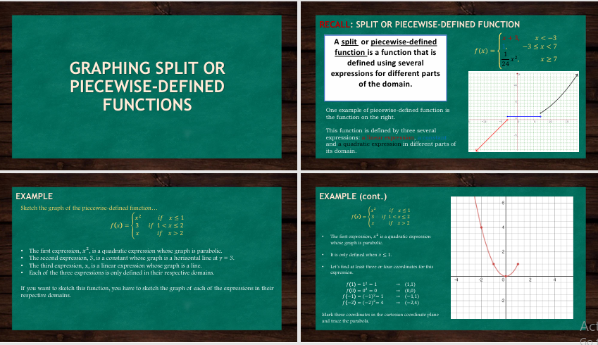
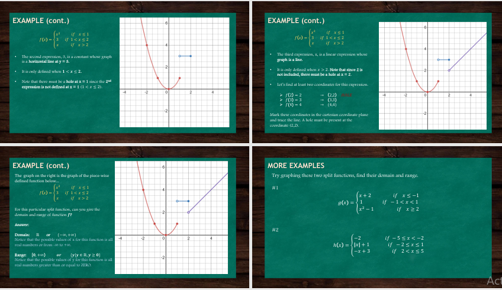

Graphing Split Or Peacewise- Defined Function
-Graphing split or piecewise-defined functions means representing on a coordinate plane a function that is defined by different rules or expressions for different intervals of the domain, where each “piece” of the function applies only to a specific range of input values, and the graph may show distinct segments that can be connected or disconnected, continuous or discontinuous, depending on the conditions given for each part, thereby allowing us to clearly see how the function behaves differently across various intervals.

